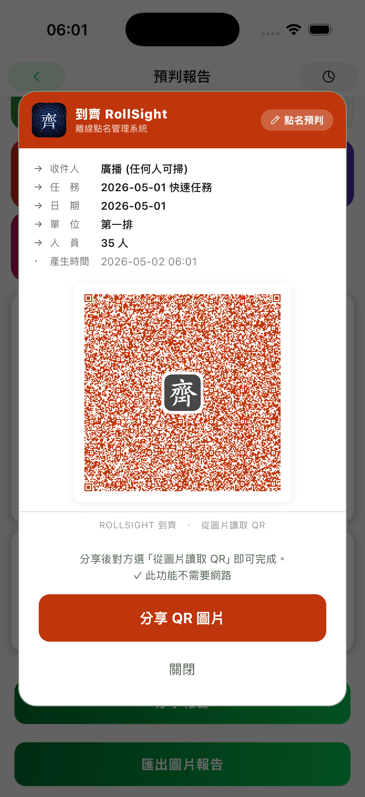

單位建制管理
以階層方式管理單位、人員與職務，適合小型組織的日常行政。
OFFLINE / LOCAL FIRST
RollSight 協助你建立單位、安排座位圖、執行日常點名、匯出報告，並透過 QR Code 在裝置間同步資料。資料預設留在本機，不需要雲端帳號。

以階層方式管理單位、人員與職務，適合小型組織的日常行政。
用座位圖快速點選到、缺、事故狀態，支援座位調整與多種顯示主題。
建立日常點名任務，記錄出席狀態，並匯出 PNG 報告供回報或留存。
透過 QR Code 交換建制與點名資料，不需要伺服器或雲端帳號。
PRODUCT SCREENS
從首次設定、日常點名到報告彙整，介面以緊湊卡片、狀態標籤與清楚的操作區塊呈現。


THEME TOKENS
網站以 Light / Dark 作為長文閱讀基礎；lowlight、camo、nv 僅作為 RollSight App 佈景樣本，保留狀態 pill、緊湊卡片、微標籤與截圖框語彙。
從單位名稱、人員名冊與基本階層開始，之後的座位圖、任務與報告都會使用同一份資料。
座位圖讓你在點名時直接看位置、選狀態、補事故原因，不需要來回翻找名冊。
需要轉交或彙整資料時，使用 QR Code 傳送給另一台裝置；流程以簽章驗證與防重放降低誤收風險。
USER GUIDE
完整手冊會依首頁的使用流程延伸，整理首次設定、建立座位圖、執行點名、匯出報告與 QR 同步等章節。需要協助時，也可以先從支援頁面聯絡開發者。
設定 PIN、建立第一個單位，確認日後資料都以本機為主要保存位置。
調整座位、分區、人員與職務，讓點名畫面符合實際工作方式。
建立任務、標記到位或事故狀態，並在摘要畫面檢查回報結果。
匯出報告圖片，或透過 QR Code 在裝置間傳送需要交接的資料。
RollSight 是離線優先工具。你建立的單位、人員、點名與座位圖資料儲存在裝置本機；跨裝置資料傳輸透過 QR Code 點對點進行，並以簽章驗證、防重放與裝置綁定降低誤收或遭竄改風險。App 只使用匿名崩潰與效能資料來修復問題。
查看完整 Privacy Policy